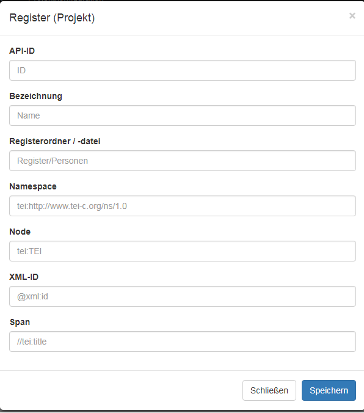
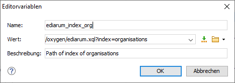

Ein eigenes Register anlegen
Wenn Sie ein Register benötigen, das nicht bereits als Standardregister in ediarum enthalten ist, legen Sie dieses in eXist-db in der ediarum.DB-App an und verknüpfen es anschließend mit Oxygen.
- Wählen Sie das Menü Verwaltung > Projekte aus.
- Klicken Sie das Feld Ihres eigenen Projekts an.
- Wählen Sie das Menü Projektkonfiguration > Register aus.
- Stellen Sie sicher, dass das gewünschte Register nicht bereits in der angezeigten Registerliste enthalten ist.
- Klicken Sie im Feld Neue Registeranbindung (Projekt) auf Hinzufügen.
-
Füllen Sie in dem geöffneten Fenster alle Parameter aus.
Abbildung 1. Fenster für den Eintrag von Register-Parametern

Tabelle 1. Beispielhafte Werte, anhand eines Registers für Maßangaben Beispielwert Erklärung Struktur eines Registereintrags <item xml:id="mark_koelnisch"> <label>Kölnische Mark</label> </item>
API-ID units frei wählbar, wird bei den Editorvariablen angegeben (sollte keine Leer- oder Sonderzeichen enthalten) Bezeichnung Maße Name des Registers (frei wählbar) Registerordner/ -datei Register/Maße.xml Register/NAME.xml Namespace tei:http://www.tei-c.org/ns/1.0 tei:http://www.tei-c.org/ns/1.0 Node tei:item orientiert sich am Aufbau des Registers XML-ID @xml:id @xml:id Span //tei:label orientiert sich am Aufbau des Registers -
Klicken Sie auf Speichern.
In der Registerliste sehen Sie nun das neue Register. Über den Button API-Links sind die URLs für den Aufruf des Registers zugänglich.
Erstellen von Editorvariablen in Oxygen
Zum Nutzen registerspezifischer Funktionen müssen die entsprechenden Editorvariablen definiert sein.
- Stellen Sie sicher, dass die richtige Projektdatei (.xpr) in Oxygen geöffnet ist. (Ggf. müssen Sie über Projekt > Projekt öffnen... die richtige Datei auswählen.)
- Wählen Sie nun Optionen > Einstellungen > Benutzerspezifische Editorvariablen [P].
-
Erstellen Sie mit Neu eine neue Editorvariable.
Abbildung 2. Fenster für den neuen Eintrag einer benutzerspezifischen Editorvariable

Tabelle 2. Werte der benutzerspezifischen Editorvariable zur Einbindung eines Registers Beispielwert Erklärung Name ediarum_index_IN EDIARUM GEGEBENE API-ID Der Name der Variable. Dieser wird später in Funktionen oder anderen Editorvariablen verwendet und sollte daher verständlich sein sowie keine Leer- oder Sonderzeichen enthalten. Wert /oxygen/ediarum.xql?index=IN EDIARUM GEGEBENE API-ID Der Wert der Variable beschreibt die (Teil-)URL und ggf. weitere Editorvariablen, auf die zugegriffen werden soll. Der Registerzugriff erfolgt hier über ediarum.xql. Als API-ID ist die im vorherigen Schritt in ediarum definierte API-ID des Registers anzugeben. Beschreibung Hier können Sie eine optionale Beschreibung vergeben. -
Damit die ediarum-Registerfunktionen verfügbar sind, muss im zu bearbeitenden Dokument für das Attribut
telota:doctypeder Wert "register" oder einen Wert der auf "register" endet vergeben sein. - Das Register ist nun für das Framework eingerichtet und Sie können die Aktionen für die editorische Arbeit mit dem Register definieren.